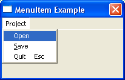

MenuItem()
Syntax
MenuItem(MenuItemID, Text$ [, ImageID])Description
Creates a new item on the current menu.
Parameters
MenuItemID A number to identify this menu item in events and commands like SetMenuItemState(). This value should be between 0 and 65535. Text$ The text for the menu item. On Windows you can use the special '&' character to underline a specific letter:
"&File" will actually display: FileImageID (optional) The image to be displayed next to the menu item. The menu must be created with CreateImageMenu() or CreatePopupImageMenu() for the image to be displayed. This value can be obtained using the ImageID() function.
Return value
None.
Remarks
To have a keyboard shortcut (will be activated with the AddKeyboardShortcut() function, except on OS X) aligned to the right side of the menu (for example, "Save Ctrl+S") use the tab character to give the correct space. The tab character has an ASCII code of 9 so use the function Chr() with the number 9 to insert a tab character. The code may look something like this:MenuItem(1, "&Open" + Chr(9) + "Ctrl+O")The supported modifiers are:- "Ctrl" : Control key - "Shift" : Shift key - "Alt" : Alt key - "Cmd" : Command/Apple key (OS X only)They can be mixed together with the "+" character: "Save As" + Chr(9) + "Ctrl+Shift+S". On OS X, when a shortcut is created in the menu, there is no need to call the AddKeyboardShortcut() function with this shortcut.
MacOS X: the 'Quit', 'Preferences' and 'About' items are considered as specials and need to be placed in the 'Application' menu to have the look'n'feel of OS X applications. PureBasic support the #PB_Menu_Quit, #PB_Menu_Preferences and #PB_Menu_About constants (to be specified as the 'MenuItemID') for these kind of menu items. When one of these constants is detected, the item isn't inserted in the current menu, but in the 'Application' menu. If a shortcut was specified, it is simply ignored and replaced by the standard one. These 3 constants aren't defined on others OS, to allow flexible numbering on these OS.
Example
If OpenWindow(0, 200, 200, 200, 100, "MenuItem Example") If CreateMenu(0, WindowID(0)) MenuTitle("Project") MenuItem(1, "Open") ; normal item MenuItem(2, "&Save") ; item with underlined character, the underline will only ; be displayed, if menu is called with F10 + arrow keys MenuItem(3, "Quit"+Chr(9)+"Esc") ; item with separate shortcut text EndIf Repeat : Until WaitWindowEvent() = #PB_Event_CloseWindow EndIf
See Also
MenuTitle(), MenuBar(), OpenSubMenu()
Supported OS
All